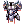

Halves' Royal Guard Class Guide
| This guide has not been updated in a while. | ||
|---|---|---|
| Information on this page may be obsolete and outdated. Please refer to the author for information on future updates. |
||
| Royal Guard | |
|---|---|
| Job Base: | Swordsman |
| Written By: | Halves |
Overview
Royal Guards (commonly abbreviated as RG) are the 3rd job classes of Crusaders. They are a very versatile class, excelling as a Tank due to their high MaxHP modifier, exclusive access to several high-DEF gears, and a wide range of defensive skills; and a noteworthy offensive class both in PvM and PvP due to their powerful offensive skills. They even have supportive capabilities which are unique to their class.
As a Swordsman-based class, they are moderately easy to level due to their naturally high HP pool and strong offensive skills even in the early game. They also have a natural advantage in movement speed due to having access to a mount.
This guide will cover mainly the PvM aspect of the game.
Stats
The Royal Guard is a Melee Tank-specialist class. Therefore, their main Stats are VIT, STR, and DEX.
- VIT is the most essential stat for an RG. It increases MaxHP and the recovery rate of healing items. It also provides SoftDEF that can decrease incoming damage by a flat amount as well as resistance against Stun and other status effects.
All builds should have at least 100 VIT including bonuses; Pure Tanks should have 120 Base VIT. - STR is an essential stat for an RG to boost their Attack Power. Having high STR not only allows them to deal a good amount of damage through their offensive skills, such as Overbrand and Banishing Point; but it also provides a higher weight limit which helps them carry extra potions for tanking.
At least 90 STR is recommended for all RG builds, except for Pure Tanks which can have less. - DEX is another essential stat for any RG who intend to use offensive skills. It adds HIT which allows the RG's attacks to connect with enemies.
Tank builds should have at least 70 DEX; while Pure Tanks can ignore the stat entirely. - INT is an important stat which helps an RG by increasing MaxSP, seeing how RGs have a relatively low SP pool while their offensive skills are somewhat SP-costly. The increased MaxSP also helps for the SP upkeep of skills like Reflect Damage and Force of Vanguard. Additionally, INT provides a bit of MDEF which helps at reducing magical damage.
At least 40 INT is recommended for all RG builds. - AGI is a semi-optional stat for RGs. Tank-builds benefit from the Flee that AGI provides, but due to the fact that Flee penalty is applied when taking on several mobs at once, Flee is somewhat irrelevant. Damage-oriented builds may benefit from the ASPD bonus, but it is considerably difficult to reach very high ASPD on an RG without sacrificing too much of the other stats.
80 AGI is sufficient for most builds; Pure Tanks should have 100 AGI. - LUK is another semi-optional stat for RGs. They can provide Perfect Dodge and Resistance against several Status Effects which helps with survivability, but in most cases it isn't needed.
Tank builds should not have any more than 70 LUK. Pure Tanks, on the other hand, can raise this to 90 LUK or beyond.
Skills
Royal Guards have a large number of useful self-buffs, as well as a few offensive and supportive skills. The following is a list of important skills that an RG should be familiar with. Less important skills have been omitted.
Passive
Allows a faster HP regen while standing still and increases the effectiveness of HP recovery items. This is an essential skill for all RGs as it substantially increases survivability with the boost of Healing items. Level 10 is recommended.
Increases MaxHP by 200 per skill level. Level 10 is recommended for the survivability and as a prerequisite to Devotion.
Peco Peco Riding and Cavalier Mastery
An essential skill which allows the RG to ride a mount which increases Movement Speed. Cavalier Mastery should be at level 5 to negate the ASPD penalty while riding a mount.
Adds Mastery ATK when wielding One-handed and Two-Handed Spear type Weapons. It should be maxed by default as a prerequisite to Spear Quicken. Pure Tanks, however, may only get level 1.
Self Buffs
Removes the flinching effect when receiving damage, allowing the RG to walk or cast skills without being interrupted when the buff is active. This skill is useful for casting skills like Prestige and Shield Spell whilst tanking damage, or simply for pulling large groups of enemies with ease. Level 10 is recommended.
Allows the RG to completely block incoming Physical attacks by up to a 40% chance. Requires a Shield to be cast. Level 10 is recommended for tanking, but level 5 is sufficient otherwise.
Reflects a percentage of incoming damage back to the attacker. This skill is useful for keeping an enemy's Aggro on the RG instead of on other party members. Requires a Shield to use. Level 5 is sufficient.
An optional platinum skill that allows the RG to push an enemy back when Auto Guard procs. Helps to allow some breathing space when tanking multiple or rapid-hitting mobs.
Reduces all incoming Ranged damage by up to 80% while reducing movement speed. It should only be cast when tanking range-damaging monsters such as Cecil Damon in Biolabs, Wandering Archers in Old Glast Heim, and when facing monsters with Hell's Judgement. Level 5 is recommended.
Increases ASPD when wielding One-handed and Two-handed Spear type Weapons. It also increases the damage of Overbrand by 50% ATK per Skill level. Level 10 is recommended, except for Pure Tanks which may ignore this skill.
Increases MaxHP by 15% at Level 5 while allowing the RG to gain Rage Counters that can be expended with Burst Attack. Level 5 is recommended both for the extra survivability and for the damage potential.
Increases HardDEF by a large amount while adding a small chance to completely dodge incoming single-target Magical attacks. Extremely useful to increase your tankiness. Level 5 is recommended.
Reflects a percentage of incoming damage in a 3x3 AoE around the RG. This skill helps to add some extra DPS while tanking hard-hitting mobs. Level 5 is recommended for Tank builds; Level 3 is sufficient for Damage-oriented builds.
Casts specific abilities based on the shield's DEF, MDEF, or Refine Level. Casting Level 3 is recommended for Tanking, and should be casted with a decently refined shield (+4 or better). Level 1 can be casted to boost damage with a high-DEF shield.
Removes all currently active status effects and Increases HP, SP, HIT, ATK, and stats for a certain duration, while allowing Hesperus Lit and Genesis Ray to be casted. Requires 1% of Experience to be casted. Optional Skill, mainly used for offense.
Supportive
The RG's signature skill. When cast on a party member, the RG will absorb any damage inflicted on the party member for a duration. With this skill, the RG can effectively tank all damage received by up to 5 party members, making it easy to keep them alive, allowing them to cast without interruption, and also making the party's healers job much simpler. If the RG has Defender activated, the party member will also be affected by the buff. Level 5 is recommended.
Gives the RG and Party members in a 5x5 AoE around the caster full immunity to any damage in a short duration, while clearing all negative status effects and regenerating up to 40% MaxHP within the duration. This skill must be used strategically for the best effect, due to its long cooldown. Level 5 is recommended for Tank builds; Damage-Oriented builds may ignore this skill.
Destroys any kind of traps in a 5x5 area around the caster. Should be maxed by default as it is a pre-requisite for Prestige.
Enchants party members' armour in a 3x3 area of the target with Holy property. Consumes 2 Holy Waters. Optional Skill, pre-requisite for Inspiration.
Offensive
Your trusty AoE skill during the earlier stages as a Swordsman and Crusader/Paladin. Inflicts a Fire-property melee damage in a 5x5 AoE around the caster. Extremely useful when fighting Undead and Earth element monsters. Level 10 is recommended.
Your most powerful skill as a Crusader/Paladin. This skill inflicts a Holy-property melee damage to a single-target, and deals double damage when used with a Two-Handed Spear weapon. When used against Undead and Shadow element monsters, this skill should do 6000+ damage per cast, which would one-shot most low-level mobs, and with high enough ASPD, this skill is spammable. Have this at Level 10 during the leveling stage, but reset and only take Level 6 once you have Overbrand.
A ranged, single target attack with decent damage that can be spammed if the RG has high enough ASPD. Level 5 is sufficient, but Damage-Oriented builds may choose to get up to level 10.
Damages enemies in a 3x3 AoE around the caster and forces them to sit by a chance. Monsters wil be immobilised for 1-3 seconds by this skill. Level 3 is sufficient.
A ranged, single target attack which snaps the RG to the target instantly, dealing critical damage and inflicting a negative effect at a 50% chance. Optional skill.
A high-damage attack that is applied on a large, cross-shaped AoE in front of the caster. It is an essential damaging skill for any RG builds. Level 5 is recommended.
An AoE attack that reveals hidden enemies and clears ground-targeted AoEs. Requires a Shield to use; has a small chance of breaking the shield. Optional skill.
A ranged, 3x11 tunnel AoE attack with damage similar to Banishing Point. It has a Cooldown which makes it non-spammable. Optional skill.
An instant, single-target attack which deals a large amount of damage depending on how many Rage Counters have been collected. Requires Force of Vanguard to be Active. Optional skill.
A high-damage single-target attack which can only be cast with 3 RGs in Banding or during Inspiration. Highly optional skill.
A Holy-element AoE which damages based on the caster's ATK and MATK; similar to Grand Cross. Requires 2 RGs in Banding or Inspiration. Highly optional skill.
Hybrid Tank Build (PvM)
This build is the most basic kind to be used in the PvM setting. It maximises the RG's versatility to allow one to cover multiple roles in the party effectively.
A Hybrid Tank Royal Guard mostly takes the role of a Tank by utilising their defensive self-buffs to survive enemy attacks. With skills like Auto Guard, Prestige, and in some cases, Defender; they minimise the damage they take and in turn improve their survivability. Meanwhile, support skills such as Devotion and King's Grace allow them to keep their party members alive. In addition to that, with points invested in STR and DEX, they can dish out significant amounts of damage with Overbrand and Banishing Point when it is needed.
Stats
Here is an example Stat build for a Hybrid Tank RG. The important thing with this build is to have high VIT and INT for higher MaxHP, DEF, and MDEF.
Feel free to fine-tune according to your gear selection and play-style.
- STR: 100
- AGI: 80
- VIT: 120
- INT: 100
- DEX: 75
- LUK: 43
Skills
Hybrid Tank RGs play a semi-supportive role by keeping Party member alive through tanking enemy hits. Their main skills revolve around the self-buffs and supportive skills, but offensive skills will also be an essential part of this build.
- Auto Guard Lv10 allows you to potentially block 30% of all incoming physical damage completely. This buff should always be active.
- Force of Vanguard Lv5 gives you 15% extra MaxHP, which may be the difference between surviving or dying in the case of powerful attacks like an MVP's Earthquake.
- Prestige Lv5 gives you up to 200+ HardDEF. With Assumptio, this may allow you to block 60% of damage via DEF alone.
- Shield Spell Lv3 gives you an increase of HardDEF according to your shield's refine level. The better the refine, the more DEF can be gained through this skill. Due to the randomness of the buff given, you need to actually check your Status Window to see when the buff actually applies.
- Defender Lv5 gives you 80% resistance to ranged attacks in exchange for a reduced movement speed. It also gives a passive DEF increase to Prestige. Only activate this buff in certain situations, such as against Cecil, Randel, and Flamel in Biolabs dungeon or Raydric Archers and Root of Corruption in Old Glast Heim.
- Reflect Shield Lv5 or above allows you to reflect up to 40% of incoming damage back to the enemy. The damage alone isn't viable for killing mobs, but it helps in keeping enemy aggro, preventing them to switch targets to your Party Members.
- Reflect Damage Lv5 allows you to reflect 40% of incoming damage in a 3x3 AoE around you, which allows for a higher damage output. However, due to the high SP upkeep, it should only be cast in certain cases, such as when tanking a hard-hitting MVP.
- Shrink Lv1 is an optional self-buff which allows you to reduce enemy DPS by proccing a knockback when Auto Guard procs. Note that Boss Monsters are not affected by this skill's knockback effect.
- Devotion Lv5 allows you to absorb the damage taken by your party members. This skill also allows the receiving party member to cast spells without being interrupted. Use this skill on your key party members, such as your Healer, your Rangers when they use Unlimit, or, in the case when you're not tanking, the Steel Body Sura or White Imprison Warlock.
- King's Grace Lv5 is a useful strategic skill that may be used to heal, clear debuffs, and provide absolute immunity to you and party members around you for a short duration. This helps a lot in keeping yourself and some party members alive when your party is nearly getting wiped. Only use this skill in emergencies, and prioritise your healers.
- Spear Quicken Lv10 gives a useful ASPD boost for auto-attacking or spamming Banishing Point. It also gives a passive 50% ATK per level bonus to Overbrand.
- Overbrand Lv5 is the main offensive skill of a Tank RG. With Spear Quicken Lv10, it gives (1500% + ~700% + ~600%) ATK damage in a single, powerful AoE. Additionally, with its powerful knockback effect, it can be used defensively to sweep enemies away from party members.
- Cannon Spear Lv5 is a moderately strong, useful ranged AoE attack which casts instantly, allowing it to be cast even when mobbing. Its damage is highly reliant on raw STR, and can be boosted further with Shield Spell Lv1. Useful for snatching multiple enemy Aggro from party members instantly, but keep in mind its eccentric AoE.
- Banishing Point Lv5 is similar to Cannon Spear, but is spammable with a single target. Useful to catch enemy aggro, or with a high enough ASPD, can be used to dish out a decent DPS.
- Moon Slasher Lv3 is a quick point-blank AoE attack that is mostly useful to catch enemy aggro and chaining skills.
Here is an example Skill Build for a Hybrid Tank RG
Strategy
The Hybrid Tank RG build is most optimised for doing party play, standing in the forefront and tanking enemy damage (MVPs especially), or defending the party unit mainly by using Overbrand. In such scenarios, the first thing to remember is to make sure you have a functional party: You as a Tank and at least one Damage dealer (often also called DPS) and one Healer. Your main priorities while taking this role is to keep enemies away from your party members (i.e. Keeping enemy's Aggro) and surviving continuous damage; dealing damage is optional.
With that in mind, there are several ways to improve your survivability:
- Gear up: Your equipment plays a vital role in reducing the damage you take. In the case of MVPs, you should at least have an Alice-Carded Shield to use. Having a high-refine shield also boosts the effect of your Shield Spell Lv3. Additionally, Bathory Card is to be considered when your enemy is capable of casting Grand Cross of Darkness (examples of mobs which use this skill include Amdarias and Grudge of Royal Knight in Old Glast Heim and Demigod and Despair God Morroc in Temple of the Demon God.)
- Self-buffs: The self-buffing skills are the RG's most valuable tools. Make sure Auto Guard, Force of Vanguard, Prestige, and Shield Spell Lv3 is always active. Reflect Shield can be active at all times, or can be swapped with Reflect Damage, depending on the circumstances. Take note of enemies that cast Dispel or inflict Silence, and make sure you're able to recast your Self-buffs if they are dispelled.
- HP Recovery Items: Despite having a Healer in your party, it's still important to have your own means of healing your own HP. For general PvM, the best choices of healing items include Mastela Fruits, Condensed White Potions, and Red Raffle Saps. Yggdrasil Berries or Seeds are also important to have, when you need to heal yourself instantly. If you have access to HP Increase Potions and Enriched White Potion Z, you should use them to increase your survivability even more.
- Other Recovery Items: Carrying a number of SP recovery items like Grape Juice or Mora Mandarins is also important, especially when tanking mobs that has SP Drain. Additionally, It's always a good idea to bring some Green Potions, because your Healer won't always know when you've been Silenced, Blinded, or inflicted with Hallucination. Having a self-sufficient Tank is often key to a successful party.
- Communicate with your Healer: Most times, it is important to make sure that your healer casts Safety Wall and Assumptio on you at all times to minimise the damage you take. Telling them when you need/don't need healing also helps by minimising the risk of the healer running out of SP.
Your main role in a party is to tank, especially MVPs. With this in mind, the playing strategy is relatively simple. With all your self-buff activated (minus Defender, except in certain cases), run towards the monster that is to be tanked and start auto-attacking. Activate Devotion on key party members beforehand if necessary, and keep the enemy on you at all times. Your main goal is to survive the battle until your damage dealer manages to kill the monster.
Take note of your healer's Safety Wall if they cast one. It's common for them to accidentally miss by a cell or two, therefore you may need to reposition yourself, or ask the healer to recast it.
Always keep an eye on your HP bar. Don't hesitate to spam your healing items or use a Yggdrasil Berry/Seed when it's needed, especially when you've been hit by a burst damage such as Sonic Blow or Earthquake.
In a case where you die but your party survives, make sure to re-cast all your self buffs after being resurrected before you go back to the MVP again. In most cases, the MVP would be scattering your party at this point, therefore it's important to try and lure it away to give your party a chance to regroup and get back into optimal damage-dealing formation.
In a case where your party is getting wiped out (such as by an Earthquake or Hell's Judgement) with your healer and damage dealers dead, use King's Grace immediately. This will make the MVP stop attacking and sometimes even step away, giving you a chance to run to your party once the skill ends and resurrect your healer.
If you decide to cast skills such as Overbrand, Moon Slasher, or Burst Attack to deal additional damage, make sure to auto-attack during the skill delay to make sure you don't lose Aggro.
Since you're holding the responsibility of keeping your party alive, bringing a Token of Siegfried at all times is a good idea. It will allow you to revive yourself with full HP and SP in case you and your party gets wiped.
Once you master these strategies, you may find yourself as a never-dying tank, which your party would be glad to have.
Pure Tank
The Pure Tank is a sub-build of the Tank RG. This build sacrifices all damage potential while maximising survivability. With this build you can ignore offensive skills while opting to get higher levels of defensive and supportive skills such as Auto Guard Lv10, Reflect Shield Lv10, Piety, and even Gospel. As for stats, this build ignores DEX completely; rendering offensive skills useless, while distributing stats in LUK and AGI for Flee and Perfect dodge. Note that this build is only recommended for very specific party-play circumstances.
Below is an example Stat build of a Pure Tank RG.
- STR: 69
- AGI: 100
- VIT: 120
- INT: 100
- DEX: 1
- LUK: 100
Damage-Oriented Tank Build (PvM)
The Damage-Oriented Tank is sort of a sub-build of the Tank RG. This build focuses more on maximising the damage output of Overbrand and Banishing Point, while still keeping the tanking capabilities, albeit sacrificing a small bit of survivability.
Stats
Below is an example Stat build for a Damage-Oriented Tank RG. The 120 STR is essential for getting the ATK bonus from Temporal Boots of STR and Brown Rat/Wakwak Card, which are key equipment choices for this build. More DEX can be added in exchange for less VIT or INT if you're using a Menblatt Card instead.
Feel free to fine-tune according to your gear selection and playstyle.
- STR: 120
- AGI: 100
- VIT: 100
- INT: 80
- DEX: 75
- LUK: 43
Skills
The skill build of a Damage-Oriented Tank build is not much different from a Hybrid Tank Build. The main difference lies in the skill point allocation being more focused on Damage-dealing and less on Support.
- Overbrand Lv5 will be your main offensive skill for this build, due to its massive damage and wide AoE. This skill allows you to do substantial AoE DPS similar to a Rune Knight's Dragon Breath when you have Poem of Bragi and elemental advantage over your enemies.
- Banishing Point Lv10 will be your secondary offensive skill. Its natural spammability and high damage potential makes it ideal for finishing off single targets very quickly.
- Moonslasher Lv3 is an auxiliary skill, mainly used as a crowd-control tool with its immobility effect in combination with Overbrand's knockback effect.
- Cannon Spear Lv5 is an optional skill, but with proper stats and gears, it can one shot low-level mobs, making it a much more convenient option than Overbrand in a farming situation.
- Spear Quicken Lv10 is your main Self-buff for this build as it would help you reach the high ASPD needed to spam Banishing Point effectively.
- Shield Spell Lv1 is an essential Self-buff for this build. With the right shield, this skill can give up to +130 ATK which would boost your damage significantly. It is also important to note that the buff stays even if the shield is taken off.
- Auto Guard Lv5, Reflect Shield Lv5, and Shrink Lv1 are still your staple Self-buffs. There is no reason not to have these active as long as you have a shield equipped.
- Inspiration Lv5 is optional, but would make a huge difference if you decide to use it. You can easily double your regular DPS while this buff is active, but keep in mind that you will lose HP and SP continuously, making it important to be ready to use potions.
Here is an example Skill Build for a Damage-Oriented Tank RG
Strategy
As the name implies, the Damage-Oriented Tank RG is specialised in Damage, be it in Solo or Party play, while also retaining its capability to Tank when needed. Due to the nature of the RG's offensive skills, they will often need to be face-to-face with the enemy to deal damage effectively. Below are a few key points to using this build optimally.
- Using Overbrand as a main damaging skill:
- Gear up to maximise ATK: Due to the fact that Overbrand is Melee, your gear should focus on increasing ATK value. Specific Gear options are listed in the Equipment section below.
- Learn to land the skill accurately: The eccentric cross-shaped AoE of the skill often confuses new players. Therefore it's important to do some practice with landing it in the right spot during the leveling stage.
- Have a Maestro with you: This is not essential, but Overbrand becomes spammable when you are under the effect of Poem of Bragi. This makes it an especially powerful skill in tight spaces where you can corner your enemies, or against boss monsters which are immune to knockback.
- Using Banishing Point as a main damaging skill:
- Gear up to maximise ASPD and Ranged Damage: Maximising the DPS of Banishing Point relies greatly on your ASPD. You should get at least 184 ASPD to spam the skill effectively. Specific Gear options are listed in the Equipment section below.
- Use AGI and DEX-Boosting Foods and ASPD Consumables: At a minimum, +6 or +7 AGI and DEX foods from Sara's Memory instance is essential (of course, having +20 and +10 foods would be optimal). Aside from that, Berserk Potion and Enriched Celermine Juice is a must. These will help you significantly to reach higher ASPD
- Use the Smartcast feature from NovaExt: The Smartcast feature is capable of spamming a skill much faster than any player can, therefore it's essential to use the feature to maximise your DPS with Banishing Point.
- Wear Leeching gear and prepare SP potions: Banishing Point is an extremely SP-expensive skill, especially considering its spammability. Having equipment with SP-leeching bonuses and bringing Grape Juice or Mora Mandarins is essential for making this build work.
- Take Off Your Shield: This is optional, but if you're fully focused on damage you can take off your shield as soon as you've gotten your Shield Spell buff. This will allow you to regain the -5 ASPD penalty from wearing a shield instantly.
- Using Cannon Spear for farming:
- Gear up to maximise STR: Cannon Spear is one of the unique skills that has its damage increased directly by a stat; in this case, STR. Therefore, stacking more STR is a good idea to increase this skill's damage. Specific Gear options are listed in the Equipment section below.
- Learn to land the skill accurately: Similar to Overbrand, Cannon Spear has an eccentric AoE: A tunnel AoE that only works in 8 directions around the caster (east, west, north, south, northeast, northwest, southeast, southwest). The best strategy is to cast it when you're directly east, west, north, or south of your target, to minimise the risk of missing.
- Use STR-Boosting Foods: This is optional as this skill is mostly used for farming. However, due to the abundance of +4~+6 STR foods from Sara's Memory, there is no reason not to use these foods to boost your damage further.
Equipment
Headgears
The headgear choices of an RG revolves around adding damage reductions or boosting attack power.
| Item | Slot | Type | Acquisition | Notes |
|---|---|---|---|---|
| Abysmal Knight Helm [1] | Upper | Defense | Military Headgear Box in Cash Shop |
Grants +10% Resistance against Boss Monsters; increases damage from regular monsters by +5%.
This hat is essential for tanking MvPs, but should be switched out when facing regular monsters. |
 Anubis Helm Anubis Helm
|
Upper/Mid | Defense | Cash Shop | Grants +10% Resistance against Boss Monsters.
Increase effectiveness of healing and healing items by +10% An alternative to Abysmal Knight Helm with its own upsides and downsides. The bonus on healing items makes you gain more HP from potions, but you lose out on the middle headgear slot and card slot(s). |
 Asgard Blessing [1] Asgard Blessing [1]
|
Upper | Defense | Gold Coins | All stats +2 and grants +5% Resistance against all elemental attacks, including Neutral. Recovers 2% HP and 1% SP every 10 seconds.
A well-rounded defensive headgear. |
 Rideword Hat [1] Rideword Hat [1]
|
Upper | Offense | Custom Headgear Quest | Grants a 5% chance to recover 8% of your damage as HP and 1% chance to recover 4% of your damage as SP. If refined to +9, recovery amount is doubled
An arguably essential headgear for offensive builds, as RG's offensive skills are very SP costly. The Leeching effect granted by this headgear will allow you to focus on offense with minimal usage of SP recovery items. |
 Ship Captain's Hat [1] Ship Captain's Hat [1]
|
Upper | Offense | Cash Shop | DEX +1, MaxHP +100, Ranged Damage +7%.
An excellent offensive headgear for Banishing Point and Cannon Spear if you're not worried about SP (e.g. when you have a Sorcerer/Wanderer in your party). I don't recommend using this in solo situations unless you have another way to leech SP to make up for not using Rideword Hat. |
 Feather Beret Feather Beret
|
Upper | Defense | Headgear Quest | Grants +10% Resistance against Demi-Humans; MDEF +10.
This item is most suitable for tanking in Biolabs and Wolfchev's Laboratory. |
| 3D Glasses | Mid | Defense | Assorted Headgear Box in Cash Shop |
Grants +5% Resistance against Neutral property attacks.
The only notable all-purpose defensive option in the mid headgear slot. |
 Sigrun's Wings Sigrun's Wings
|
Mid | Offense | Cash Shop | For Swordsman classes, grants a +1 Flat ASPD Bonus.
Very useful for spamming Banishing Point or increasing ASPD in general. |
| Evil Wing Ears [1] | Mid | Balanced | Headgear Quest | Grants +1 STR. Socketable with a Spiritual Auger from the Cash Shop.
Best offensive choices for slotted mid headgears with their +1 STR, which can also be made a defensive choice by adding Essence of Evil VIT3. |
 Monocle [1] Monocle [1]
|
Mid | Balanced | Monster Drop | No effect.
This is the only slotted mid headgear that do not require using Spiritual Auger, making it relatively cheap in the market. This item is solely defined by what you decide to slot into it. |
 Blush of Groom Blush of Groom
|
Mid | Defense | Cash Shop | Grants +3% Resistance against Demi-Humans.
This item is most suitable for tanking in Biolabs and Wolfchev's Laboratory. |
 Umbala Spirit Umbala Spirit
|
Low | Defense | Lower Hat Box in Cash Shop |
Grants +1% MaxHP.
Plain and simple, increases your survivability. |
 Gangster Scarf Gangster Scarf
|
Low | Offense | Custom Headgear Quest | Grants +5 ATK.
Suitable for damage-dealing. |
 Gentleman's Pipe Gentleman's Pipe
|
Low | Defense | Cash Shop | Grants +2% Resistance to Demi-Humans.
These are most suitable for tanking in Biolabs and Wolfchev's Laboratory. |
| Card | Defense | Monster Drop | MaxHP +1% per 2 refine levels.
Useful for increasing survivability, especially when slotted into a high refine headgear. | |
 Essence of Evil VIT3 Essence of Evil VIT3
|
Card | Defense | Demon God | VIT +4, DEF +12, MDEF +8, AGI -4.
Defensive choice. |
 Essence of Evil STR3 Essence of Evil STR3
|
Card | Offense | Monster Drop | STR +4, INT -4, ATK +12.
Best item for improving damage in the Headgear slot. |
| Card | Offense | Monster Drop | ATK +10. When killing monsters, gives a chance to drop poison herbs.
A cheaper alternative to Essence of Evil STR3. | |
| Card | Offense | Monster Drop | ATK +10. When dealing physical damage, gives a chance to gain +10 Perfect Dodge for 4 seconds.
A much more rarer alternative to the 2 previous options. | |
| Card | Status Immunity | Monster Drop | Grants Immunity against Sleep.
A situational choice that is especially useful in Horror Toy Factory. | |
| Card | Status Immunity | Monster Drop | Grants Immunity against Silence.
Another situational choice that is useful in Nightmarish Jitterbug. Keep in mind, however, that Silence can be cured using Green Potions, rendering this card relatively non-essential. | |
| Card | Status Immunity | Monster Drop | If base VIT is 80 or higher, grants +50% Resistance against Stone and Sleep.
If base AGI is 90 or higher, grants +30% resistance against Stun. A more catch-all option for resisting status ailments, especially useful in Horror Toy Factory. Keep in mind that this card does not give full immunity to Stone and Sleep unless you have it in both your upper and mid headgear slots. |

Armor
The RG has access to some of the highest-DEF armors, which gives them natural advantage when taking a tanking role.
| Item | Slot | Type | Acquisition | Notes |
|---|---|---|---|---|
 Hero Plate [1] Hero Plate [1]
|
Armor | Balanced | Bios Island Morse's Cave |
120 DEF, +5% MaxHP/SP, +10 ATK and MATK, Banishing Point damage +10%.
Has a chance to autocast Storm Gust Lv.10 and Heal Lv.10 when physically attacking. Autocast chance is increased with higher refines. The Best-in-Slot for PvM RGs with both offensive and defensive advantages. However, it autocasts Storm Gust when you attack physically, which gives you a significant Cast Delay. Therefore it is recommended to deactivate Reflect Shield when using this armor. |
|  Engraved Armor [1] | Armor | Defense | Old Glast Heim | 120 DEF, 25 MDEF.
A very simple defensive armor that drops very commonly in the instance. You can slot your defensive card choices in this armor and swap when needed. |
 Glorious Suit Glorious Suit
|
Armor | Defense | Valor Badges | 10 DEF, MaxHP +20%, Resistance to Demi-Humans +7%
This armor has the highest MaxHP bonus among body armors, but lacks a slot. The additional Demi-Human resistance also makes it suitable for Biolabs and Wolfchev's Laboratory. |
 Airship Armor [1] Airship Armor [1]
|
Armor | Defense | Airship Assault | 100 DEF, All Stats +1, MaxHP +1000, and MaxSP +100.
If worn with Airship Cloak and Boots, MDEF +10, MaxHP/SP +25%, and increases movement speed. A very solid choice for the mid-game and a decent choice for endgame tanking, and very easily obtainable from the instance. |
| Card | Defense | Monster Drop | MaxHP +10%.
Great defensive card for general usage. | |
| Card | Status Immunity | Monster Drop | Grants immunity to the Frozen status.
Useful when tanking certain MVPs like Ktullanux, Kraken, and Morroc Necromancer. | |
| Card | Offense | Monster Drop | Gives ATK +25 and DEF -5.
The best option for increasing damage. | |
| Card | Status Immunity | Monster Drop | Changes your armor into Undead Property.
This card grants you immunity to Shadow property attacks and to Frozen and Stone Curse statuses, but makes you unable to receive a priest's Healing nor Ressurection. This should only be used when you're in a no-Priest party or when Soloing. | |
| Card | Defense | Monster Drop | Changes your armor into Shadow Property
Another card that grants immunity to Shadow element attacks. Essential for tanking monsters that cast Grand Cross of Darkness, such as Amdarias, Grudge of Royal Knight, Demigod, and Despair God Morroc. |
Weapons
As a Swordsman-based class, the RG is able to wield a wide variety of weapon types, including Swords, Spears, Daggers, Maces, and Axes. However, most of the RG's main offensive skills are Spear-exclusive. Therefore it is recommended to use One-handed or Two-handed Spears.
| Item | Slot | Type | Acquisition | Notes |
|---|---|---|---|---|
 Imperial Spear [1] Imperial Spear [1]
|
Weapon | Offense | Monster Drop | 180 ATK, 180 Weight, Weapon Level 3. Increases damage of Banishing Point and Cannon Spear by +20%; increases it further by +3% every 2 refines. Enchantable at Malangdo.
The best weapon for Banishing Point and Cannon Spear, especially when overupgraded. It can be enchanted with up to 2 Expert Archer Lv6 granting a total of +24% Ranged Damage, or 2 Fighting Spirit Lv9 granting a total of ATK +60 and HIT +10. |
 Crimson Spear [2] Crimson Spear [2]
|
Weapon | Offense | Monster Drop | 90 ATK, 90 Weight, Weapon Level 3. ATK +(Refine^2) up to refine level 15.
If base level is 70 or higher, ATK +5 every 10 base levels. Comes pre-enchanted with a random element. An excellent weapon, but requires high refines to truly shine. Has a total of 365 ATK at +15, not counting refine bonuses, and has 2 slots which allow for even more damage if slotted with the right cards. Holy element ones are the best choice, while Neutral and Fire are acceptable options. |
| Thanatos Spear [1] | Weapon | Offense | Ghost Palace | 150 ATK, 300 Weight, Weapon Level 4. INT +6, VIT +6, LUK -6.
Grants a low chance of recovering 5% of your damage as HP and SP. A decent and easily farmable weapon with HP/SP Drain utility. Can be used as a secondary weapon to swap when you need to recover SP, or can even be used as a primary weapon if overupgraded. |
 Long Horn [1] Long Horn [1]
|
Weapon | Offense | Monster Drop | 150 ATK, 100 Weight, Weapon Level 4, Holy Property. Enchantable at Malangdo
A decent alternative to use when going against Dark or Undead property monsters, due to the Holy Property. Can also be an excellent primary weapon if overupgraded and properly enchanted. It can be enchanted with up to 2 Expert Archer Lv6 granting a total of +24% Ranged Damage, or 2 Fighting Spirit Lv9 granting a total of ATK +60 and HIT +10. |
 Crimson Lance [2] Crimson Lance [2]
|
Weapon | Offense | Monster Drop | 175 ATK, 175 Weight, Weapon Level 3. Two Handed Spear.
ATK +(Refine^2) up to refine level 15. If base level is 70 or higher, ATK +5 every 10 base levels. Comes pre-enchanted with a random element. Another choice of Crimson weapon, also requiring high refines to truly shine. Has a total of 450 ATK at +15, not counting refine bonuses, and has 2 slots which allow for even more damage if slotted with the right cards. Holy element ones are the best choice, while Neutral and Fire are acceptable options. Since this is a two-handed weapon, you will not be able to utilise your shield skills; and if using White Knight Card, you will not be able to gain benefit from its combo effect. |
| Thanatos Long Spear [1] | Weapon | Offense | Ghost Palace | 250 ATK, 375 Weight, Weapon Level 4. Two Handed Spear.
INT +6, VIT +6, LUK -6. Grants a low chance of recovering 5% of your damage as HP and SP. Mainly a farming weapon, with higher base ATK compared to Thanatos Spear. |
 Lance [1] Lance [1]
|
Weapon | Offense | Prontera Weapon Dealer | 185 ATK, 250 Weight, Weapon Level 3. Two Handed Spear.
The best and easiest to get weapon for leveling with Holy Cross during Crusader and Paladin stage. |
 Fortune Sword Fortune Sword
|
Weapon | Defense | Monster Drop | LUK +5, Perfect Dodge +20.
A defensive weapon option for Pure Tanks utilising Perfect Dodge. |
 Main Gauche [4] Main Gauche [4]
|
Weapon | Defense | Monster Drop | Two choices of 4-slotted weapons among many others. With 4 Essences of Evil VIT3, it can grant +16 VIT, which is useful for increasing your survivability. |
| Card | Offense | Old Glast Heim | ATK +15, Damage against Medium and Large monsters +20%. When paired with Khalitzburg Knight Card, Damage against Medium and Large monsters +15%. The absolute best choice for offensive purposes especially when paired with Khalitzburg Knight Card. This can be obtained by exchanging Coagulated Spell or Contaminated Magic from Old Glast Heim with the NPC Portrait Collector at the Instance entrance area. | |
| Card | Offense | Monster Drop | Ranged damage +10%.
Decent Choice for Banishing Point and Cannon Spear. | |
| Card | Offense | Room of Consciousness | Ranged damage +10%. If base level is 100 or above, Ranged damage +2%
An improved alternative to the regular Archer Skeleton Card. | |
| Card | Offense | Monster Drop | ATK +30, drains 1 SP with each physical attack.
A general-purpose offensive card. | |
| Card | Offense | Monster Drop | ATK +20
Alternative to Zipper Bear with less ATK bonus but without the SP consumption per attack. | |
| Card | Offense | Monster Drop | Damage against Boss Monsters by +25%.
Non-essential, but useful when fighting MVPs. | |
| Essence of Evil VIT3
|
Card | Defense | Demon God | VIT +4, DEF +12, MDEF +8, AGI -4.
The only notable defensive card choice for the weapon slot. Best slotted into a 4-slotted weapon. |
Shields
The RG has access to the strongest shields in the game. It is important to try getting a high-DEF, high-refine shield to maximise the effect of Shield Spell Lv1 and Lv3.
| Item | Slot | Type | Acquisition | Notes |
|---|---|---|---|---|
| Sacred Mission [1] | Shield | Defense | Monster Drop Socket Enchant |
120 DEF, 60 Weight. INT +2, VIT +2, MDEF +3; Indestructible.
The Best-in-slot for Royal Guards due to it being indestructible and having high DEF. Having MDEF also allows it to be used for Shield Spell Lv2. However, it comes without a slot and needs to be Socket Enchanted. |
 Rosa Shield [1] Rosa Shield [1]
|
Shield | Defense | Monster Drop | 130 DEF, 130 Weight.
A very simple and easy to farm (and cheap in the market) shield with the highest DEF available, useful for Shield Spell Lv1. |
| Shield | Defense | Monster Drop | 120 DEF, 250 Weight, MDEF +5.
Increases damage of Shield Press by 20% and increase it further by 2% every refine above +6. A similarly cheap alternative to Rosa Shield with slightly less DEF but with some MDEF for Shield Spell Lv2. | |
| Giant Shield [1] | Shield | Defense | Monster Drop | 130 DEF, 280 Weight. Resistance to Large monsters +5%.
If refined to +9, additional +5% Resistance to Large monsters. Somewhat of an upgrade to Rosa Shield, with the same DEF and some extra resistance that applies to most MVPs due to many of them being Large. Much more difficult to farm. |
| Strong Shield [1] | Shield | Defense | Monster Drop | 90 DEF, 250 Weight. Prevents knockback, but receive 20% more physical and magical damage.
A situational choice that is useful against MVPs that tend to knock you back. However, standing in a corner can also work for preventing being knocked back. |
 Platinum Shield Platinum Shield
|
Shield | Monster Drop | Defense | 95 DEF, 120 Weight, MDEF +5.
Resistance to Medium and Large Monsters +15%, Resistance to Undead monsters +10%. Grants a chance to reflect magic attacks back to the caster. A very good well-rounded alternative with sort of a built-in Hodremlin card. However, it lacks a slot. |
 Thorny Buckler [1] Thorny Buckler [1]
|
Shield | Defense | Monster Drop | 85 DEF, 100 Weight, MDEF +2.
If worn with Bison Horn, ASPD +10% and Reflects 5% damage back to the enemy. A decent alternative that is mainly used with the set for the ASPD bonus. |
| Card | Defense | Monster Drop | Resistance to Boss Monsters +40%, Receive 40% more damage from regular monsters.
Essential card for tanking MVPs, but should only be worn when tanking the MVP itself. Switch to a different carded Shield when fighting against regular monsters. | |
| Card | Balanced | Old Glast Heim | DEF +20, Resistance to Medium and Large monsters +25%.
If worn with White Knight Card, additional Resistance to Medium and Large monsters +5%. Best card both for Offensive and Defensive purposes when paired with White Knight. This can be obtained by exchanging Coagulated Spell or Contaminated Magic from Old Glast Heim with the NPC Portrait Collector at the Instance entrance area. | |
| Card | Defense | Monster Drop | Resistance to Normal (non-boss) monsters +25%, Receive 50% more damage from Boss Monsters.
Essentially an inverse to Alice Card, this can be used when fighting against non-boss monsters, particularly during the floor-clearing stage of instances such as Old Glast Heim, Horror Toy Factory, Infinite Space, etc. Remember to switch to an Alice Carded shield during boss fights! | |
| Card | Defense | Monster Drop | Resistance to Small, Medium, and Large monsters +15%.
Good defeinsive card for general usage, albeit less effective compared to Gaster. | |
| Card | Defense | Monster Drop | MaxHP +5%.
Decent card for general usage. | |
| Card | Defense | Monster Drop | Resistance to Demi-Humans +30%.
Situational choice, mainly useful for Biolabs and Wolfchev's Laboratory. |
Garments
The RG's Garment choices vary greatly in function, therefore it is important to make your choice based on what role you will take in your party.
| Item | Slot | Type | Acquisition | Notes |
|---|---|---|---|---|
 Heroic Backpack [1] Heroic Backpack [1]
|
Garment | Balanced | Gold Coins Proof of Loyalty Valor Badges Monster Coupons |
20 DEF; enables use of Greed Lv1.
Grants additional bonuses when it is refined to +7 or +9, depending on your stats. Notable bonuses for Royal Guards include:
A great choice for offensive builds due to the STR, AGI, and DEX bonuses, while also giving some defensive function with enough base VIT. Only use this if it's refined to +7 or above. |
 Giant Faceworm Skin [1] Giant Faceworm Skin [1]
|
Garment | Balanced | Faceworm's Nest | 38 DEF; MDEF +10. If worn with upgraded Temporal Boots, MaxHP +15%, MaxSP +5%.
Comes randomly pre-enchanted with various stats, with up to a total of +18 stats. This garment shines mainly through its enchantments. It's best to get a specialised one (e.g. enchanted with Special AGI, AGI +7, AGI +5), rather than one with mixed enchantments (e.g. enchanted with Special VIT, AGI +6, STR +6). Ones with high VIT enchantments are great for increasing MaxHP; while ones with high AGI enchantments are good for increasing ASPD; and ones with high STR enchantments are good for Cannon Spear damage. |
 Airship Cloak [1] Airship Cloak [1]
|
Garment | Defense | Airship Assault | 25 DEF; FLEE +10; Variable Cast Time -10%; Resistance to Neutral +10%.
If worn with Airship Armor and Boots, MDEF +10, MaxHP/SP +25%, and increases movement speed. An excellent defensive choice even without the Set due to the Neutral Resistance it gives, having the same amount as a +9 Heroic Backpack. |
 Drifter's Cape Drifter's Cape
|
Garment | Defense | Rock Ridge | 0 DEF; Resistance to Neutral element attacks +20%. If refine is +7 or above, additional Neutral Resistance +5%. If refine is +9 or above, additionaly Neutral Resistance +5%.
A great defensive choice even at +0 refines. With a total of +30% Neutral Resistance at +9, it nets the same amount of Neutral Resistance as +9 Heroic Backpack/Airship Cloak with Raydric Card. |
| Card | Defense | Monster Drop | FLEE +10; Increase healing amount of Condensed Potions by 200%.
A fantastic card for survivability, allowing you to heal over 5000 HP per condensed potion and even further if using potions brewed by Ranked brewers. To get Ranked condensed potions, type The main drawback of this card is that it will not save you from being one-shot by certain MVP skills like Earthquake, while a Resistance card might be able to. | |
| Card | Defense | Monster Drop | Resistance to Neutral +20%.
Great defensive card for general usage | |
| Card | Defense | Monster Drop | Resistance to Neutral +15%.
A cheaper alternative to Raydric, albeit less commonly vended in the market. | |
| Card | Offense | Monster Drop | Grants +3 ATK and +1% ASPD per 10 points of base STR. If base STR is 120 or higher, grants an additional +40 ATK.
The best offensive card in the garment slot, granting a total of 76 ATK and 12% ASPD at 120 base STR. | |
| Card | Offense | Monster Drop | Grants +5 ATK per 10 points of base STR.
Good alternative to Brown Rat for improving damage. This grants 60 ATK at 120 base STR. | |
| Card | Offense | Monster Drop | Grants +1% Ranged Damage per 10 points of base DEX.
Useful for maximising the damage of Banishing Point and Cannon Spear, but may not give its highest bonus unless you spend a lot of extra points in DEX. | |
| Card | Defense | Monster Drop Mystical Card Album |
Resistance to Neutral +50%; Receive 50% more damage from all other elemental attacks.
Possibly the absolute best card for tanking since non-Neutral element attacks are rare in PvM. As a mini-boss card, this is extremely rare and expensive. |
Footgear
Similar to Garments, the RG's footgear choices also vary greatly in function.
| Item | Slot | Type | Acquisition | Notes |
|---|---|---|---|---|
 Enhanced Variant Shoes [1] Enhanced Variant Shoes [1]
|
Footgear | Defense | Gold Coins Proof of Loyalty Valor Badges Monster Coupons |
13 DEF; MaxHP/SP +12%
A very straightforward choice for increasing survivability. |
 Variant Shoes Variant Shoes
|
Footgear | Defense | Monster Drop | 13 DEF; MaxHP/SP +20%. Each refine reduces the MaxHP/SP bonus while increasing DEF.
A non-slotted, cheaper version of the above. Make sure not to refine this footgear to keep its HP/SP bonus. |
 Temporal STR Boots [1] Temporal STR Boots [1]
|
Footgear | Offense | Old Glast Heim | 25 DEF; MaxHP +300, MaxSP +30. Every 3 refines, MaxHP +100, MaxSP +10, ATK +7.
If Base STR is 120 or above, ATK +50. Can be enchanted with materials from Old Glast Heim. A key item in damage dealing due to its significant ATK bonus. The best choice of enchantment for this footgear is either Fighting Spirit for damage in general or Expert Archer for Banishing Point and Cannon Spear. The ideal special enchantment should be Bear's Might, but Hawk Eye and Lucky Day are also acceptable. Instructions on crafting and enchanting these are on the Temporal Boots page. |
 Airship Boots Airship Boots
|
Footgear | Defense | Airship Assault | 26 DEF; AGI +1, ASPD +10%. Cannot be refined.
If worn with Airship Armor and Boots, MDEF +10, MaxHP/SP +25%, and increases movement speed. An overall solid choice in the mid-game when worn with the Set, and easily obtained from the instance. |
| Card | Balanced | Monster Drop | STR +2. If slotted into a +9 or above footgear, MaxHP/SP +10%.
Best footgear card for survivability if the refine requirement is met. | |
| Card | Defense | Monster Drop | MaxHP +10%; VIT +1 (Ferus) or AGI +1 (Matyr).
An easier alternative to Firelock Soldier, without the SP bonus. | |
| Card | Balanced | Monster Drop | MaxHP/SP +8%
Another alternative with a slightly lower amount of HP/SP bonuses. | |
| Card | Balanced | Monster Drop | MaxHP/SP +4%. If slotted to a +4 or below footgear, additional MaxHP/SP +4%; HP Recovery +5%.
Almost identical to Verit, but should only be slotted into a +4 or below footgear. | |
| Card | Offense | Horror Toy Factory | ATK +1%, MATK +1%, MaxHP -2%.
Every 2 refines, additional ATK +1%, MATK +1%, MaxHP -2%. One of the few offensive choices for the footgear slot, sacrificing MaxHP for more damage. Best slotted to a high-refine footgear. This card is mainly for glass cannon builds, therefore it is advisable not to use this when you are also required to tank. | |
| Card | Offense | Geffen Magic Tournament | Ranged Damage +5%, ATK +3% (Blut Hase) or ASPD +3% (Odoric).
Another offensive choice that specifically benefits Banishing Point and Cannon Spear builds. Blut Hase is arguably better than Odoric due to how significant ATK +3% can be, compared to the minuscule effect of ASPD +3%. | |
| Essence of Evil STR3
|
Card | Offense | Monster Drop | STR +4, INT -4, ATK +12.
Another offensive choice in the footgear slot. Although it does not give any MaxHP penalty, you still lose out on the potential MaxHP bonuses granted by the other cards listed above. Therefore this is only recommended for glass cannon builds. |
Accessories
For a Tank RG, the accessory slots are arguably non-essential. However, several accessories as listed below will grant significant effects for offensive types.
| Item | Slot | Type | Acquisition | Notes |
|---|---|---|---|---|
| Physical Enhancer Ring [1] | Accessory | Offense | Geffen Magic Tournament | ATK +5%. Can be enchanted with up to 2 extra properties.
Currently the best accessory for damage-dealing, given you have it enchanted with the right properties. The best possible enchant for an offensive RG would be double ATK +3% for a total of ATK +11% counting the base item effect. |
 Pendant of Maelstrom [1] Pendant of Maelstrom [1]
|
Accessory | Offense | Nightmarish Jitterbug | All Stats +1, ATK/MATK +6%. When receiving magical damage, low chance of autocasting Maelstrom Lv1.
An excellent accessory for damage-dealing due to its high ATK bonus. The main drawback is that the Maelstrom autocast could give you some Cast Delay which may disrupt your skill casting, especially when you're going solo or when there isn't a Maestro in your party. |
 Bakonawa Agimat Tattoo Bakonawa Agimat Tattoo
|
Accessory | Offense | Bakonawa Lake Pintados Festival |
ATK +7%, ASPD +10%
This accessory has a good balance between ASPD and ATK bonus, making it a good option for Banishing Point builds. The main downside is that it lacks a slot. |
| Sheriff's Left Badge [1] | Accessory | Balanced | Rock Ridge | If base STR is 90 or above, ATK +3%. If base VIT is 90 or above, MaxHP +1000. If base DEX is 90 of above, Ranged damage +3%. A well-rounded and easily obtained accessory. Note that you can't wear 2 of these. |
 Sarah's Left Earring Sarah's Left Earring
|
Accessory | Balanced | Sarah and Fenrir | Enables use of Heal Lv1 (Left) or Teleport Lv1 (Right). Can be enchanted using materials from Sarah and Fenrir
These accessories mainly shine through their possible enchantments. Notable enchantments include:
However, neither of them have a slot. |
 Expert Ring [1] Expert Ring [1]
|
Accessory | Offense | Monster Drop | Cast Delay -5%, SP Cost of skills +5%.
Helpful for Spamming Overbrand. |
 Bison Horn [1] Bison Horn [1]
|
Accessory | Offense | Monster Drop | AGI +2. If worn with Thorny Buckler, ASPD +10% and Reflects 5% damage back to the enemy.
This accessory is mainly used for maximising ASPD with Banishing Point. |
| Buffalo Horn [1] | Accessory | Offense | Custom Headgear Quest | ASPD +1. If worn with Buffalo Horn, additional ASPD +1.
This accessory is mainly used for maximising ASPD with Banishing Point. |
 Silversmith Bracelet [1] Silversmith Bracelet [1]
|
Accessory | Balanced | Old Glast Heim | All Stats +1, MDEF +3. Enables use of Spell Breaker Lv5.
Best generic slotted accessory. |
 Morrigane's Pendant Morrigane's Pendant
|
Accessory | Offense | Monster Drop | CRIT +3; STR +2 (Pendant) or ATK +5 (Belt)
Relatively cheap offensive accessories. |
| Card | Defense | Monster Drop | Resistance against Ranged attacks +5%.
Decent defensive choice. | |
| Essence of Evil VIT3
|
Card | Defense | Demon God | VIT +4, DEF +12, MDEF +8, AGI -4.
Another decent defensive choice. |
| Card | Defense | Monster Drop | AGI +1, Perfect Dodge +5
Defensive choice for Pure Tanks utilising Perfect Dodge. | |
| Card | Balanced | Monster Drop | Casting cannot be interrupted, Variable Cast Time +25% (Phen) or +30% (Butterfly).
Useful for casting Overbrand while tanking enemy attacks. | |
| Card | Offense | Monster Drop | ATK +20, MaxHP -1%
Best offensive choice. | |
| Essence of Evil STR3
|
Card | Offense | Demon God | STR +4, INT -4, ATK +12.
A cheaper alternative to Gold Scaraba. |


Pets
Pets are often an overlooked aspect of the game, mostly due to the fact that they're a hassle to take care of, and seemingly only serve aesthetic purposes. However, the pets listed below have bonuses that can give notable benefit to an RG.
| Item | Slot | Type | Notes |
|---|---|---|---|
 Loli Ruri Loli Ruri
|
Pet | Defense | MaxHP +3%, autocasts Heal Lv1 when being physically attacked. |
 Incubus Incubus
|
Pet | Offense | MaxSP +5%, has a chance to recover 5% of your damage as SP. |
 High Orc High Orc
|
Pet | Offense | Up to +25 ATK when loyal. Obtainable from the Random Pet Egg item in the Cash Shop. |
 Gorilla Gorilla
|
Pet | Offense | STR +2, ATK +5 when loyal. Obtainable from the Random Pet Egg item in the Cash Shop. |
 Picky Picky
|
Pet | Offense | STR +1, ATK +5 |
 Shinobi Shinobi
|
Pet | Balanced | AGI +2 |
| Little Poring | Pet | Defense | HP Recovery +50%. |
Leveling
For this section, I will assume that the average new player would start out alone, only joining parties and guilds a while after starting out. Therefore, this Leveling guide is based on the Damage-Oriented Tank Build, which works better for Solo-play compared to the Hybrid Tank Build.
Novice
The Novice Stage is quick and easy to go through. Just by registering to Criatura Academy, you should be at Job level 10 already. Doing the Shop Helper Quest is also useful to get Novice Fly Wings to use as you go along.
First Job
As a Swordsman, you will have access to two noteworthy offensive skills: Magnum Break and Bash. These two skills will make leveling as a Swordsman relatively easy, compared to other classes.
The Cotton Shirt and Novice Spear is adequate for getting you up to Second Job, but it is also a good idea to get Eden Group Equipments.
Level 11 - 26
If you haven't reached level 11 yet as a Swordsman, go south of Prontera and kill some Porings to earn a few levels. Raise some DEX and STR and don't bother with the rest of the stats for now.
Register at the Eden Group and take the Spore Hunting quest. Pick up a couple of Concentration potions from the Tool Dealer, then start killing Spore at the field east of Payon town with regular attacks until you finish the quest. Make sure you have the @autoloot Player Command active at 100% so you can earn random loot to sell to NPCs, and there's also a chance you'll get a Spore Card, which might be useful later on. You can then submit the quest back in Eden Group HQ.
Aim to get Bash Lv10 and Magnum Break Lv10 as soon as possible, all while keeping on raising DEX and STR.
Level 27 - 40
Talk to Instructor Boya to get her equipment quest. Go to Payon Dungeon(or Ant Hell if you're level 33 already) and do what the quests tell you. Having Bash and/or Magnum Break should help a lot here. Claim the equipment rewards back in Eden Group HQ after you finish the quest (Either the Sabre or the Slayer is good), then continue leveling until you reach Base level 40. Make sure you have 40~50 DEX at this point, with decent STR and some points in VIT and AGI. Ignore INT and LUK as they are useless at this point.
Level 40 - Job change
Go to Orc Dungeon floor 1 and use Magnum Break to kill the mobs there. You will have an elemental advantage against these monsters, since they are Undead element, which means they take more damage from Magnum Break's Fire Property attack, making it an easy place to level. It's a good idea to stock on Fresh Fish (purchasable from the Comodo Chef Assistant) if you run out of Novice/Intermediate Potions from your Beginner box.
When you reach Base Level 51, you may choose to get Instructor Boya's next quest, which is also located in Orc Dungeon.
As a pre-trans class, you may choose to Jobchange at Job level 40 without any disadvantage. However, make sure you have Magnum Break Lv10 and Endure Lv10 when you Job change.
Second Job
It's relatively easy to level as a Crusader, due to having access to Holy Cross, which does 900% damage with a Two-handed Spear type Weapon. You also have Magnum Break, which is still a reliable AoE to use at these higher levels.
Job change - Level 70
Continue leveling in Orc Dungeon with Magnum Break until you reach Base Level 70. Try to get Holy Cross Lv10 and Cavalry Mastery Lv5 as soon as possible, and make sure you have 60~70 DEX at this point. Keep adding more STR for better damage while putting some points in VIT for higher MaxHP and AGI for faster ASPD.
If you have been collecting and selling your loot, you should have enough money to buy a Lance from the Prontera Weapon Dealer, which can double your Holy Cross damage due to its weapon type.
Level 71 - 90
Talk to Instructor Ur to get his equipments quest, and talk to the 71-85 board to get the Evil Druid and Wraith hunting quests. Grab a few Awakening Potions from the tool dealer and a Lance from the Prontera Weapon Dealer, then go to Glast Heim St.Abbey and finish the quests. You should be able to one-shot the mobs with Holy Cross, due to the elemental advantage. Having Spear Quicken also helps you dish out damage quicker.
It is advisable for you to get Eden Group Spear I for the reward, as it is a good weapon to use as a Royal Guard at level 99 - 120.
After you've finished Instructor Ur's quest, there are several areas you can choose to go to. You can continue hunting Evil Druids and Wraiths(which should be a piece of cake) while using the Board Quests for more EXP, or you can earn some Zeny by farming for Crimson Weapons.
Ground Petites located east of Glast Heim Entrance would be the easiest choice, as they are Earth 1 element, therefore take 50% more damage from Magnum Break's Fire property attack. The Crimson Mace that they drop is useful for Geneticists and Suras, and is therefore a popular and valuable item to sell in the market.
Another option is Jaguars and Headless Mules in the field outside of Brasilis town, the map of which is littered with various other mobs as well. Jaguars are Earth 2 element, and therefore take 75% more damage from Magnum Break. However, the Headless Mules themselves are actually Fire 3 element, which means they are immune to Magnum Break, and thus should be killed using Holy Cross. Jaguars drop Crimson Knuckles, which may be useful for Suras; while Headless Mules drop Crimson Katars, which are extremely valuable for Guillotine Crosses.
Lastly, Stem Worms in the field 1 map north and 1 map east of Lighthalzen drops Crimson Spears, which are useful for you as an RG. These monsters are Wind 1 element, which means they don't receive more damage from either Magnum Break and Holy Cross. Use both skill in combination depending on the circumstances. Additionally, this map also contains Metalings, which drop Crimson Revolvers, valued by Gunslingers and Rebels.
Level 91 - 99
Go to the 2nd floor of Eden Group Headquarters and grab a few quests from the Level 91-99 board. It is recommended to avoid Heater, Shinobi, and Evil Nymph, due to the difficulty reaching the place and the risk of encountering MVPs while you hunt. You should be able to reach 99 with 6~10 quests, so you can skip submitting the quest and keep the rewards for after rebirthing.
If you didn't take Instructor Ur's quest at level 71, you can also take his quest now. Be sure to take the Siroma and Roween hunting quests from the 91-99 board as well while doing this quest.
Make sure to keep the Rotten Meat which is dropped by Roweens, as they can be turned in for EXP at the 100-110 board.
Rebirth
Leveling as a reborn character can be done with the same strategy. It's important to note, however, that some Criatura Academy quests are no longer available if you're a High Novice. In such case, you might need to level manually by hitting Porings or other low-level mobs.
If you've saved a few 91-99 Board quests, you can start turning them in one by one as soon as you job change into a High Swordsman. A good trick to know is that you are able to close your game by using Alt+F4 or using the close window button if you are playing in windowed mode. This allows you to interrupt the NPC dialogue, preventing yourself from wasting substantial amounts of EXP rewards if you've already hit the max level.
Talk to the board and turn in one quest, which should bring you up to Job Level 50, then interrupt the dialogue by closing your game. Log back in and change into a Paladin, then go back and turn in the rest of the quests.
Additionally, you can also do the Cautious Village quest, which is a very simple quest which can earn you a huge amount of EXP with virtually no effort. I found it best to do this after you've jobchanged into a Paladin, before you turn in the rest of your 91-99 quests
If the board quests aren't enough for you to reach 99/70, you can try hunting in Glast Heim Prison for Injustices and Rybios. The Injustices drop Crimson Katars which can be sold for a decent price, as they are useful for Guillotine Crosses. You may also choose to farm Crimson Maces from Soliders at Turtle Dungeon, Crimson Rods from Bathories at Clock Tower Basement (which may also drop a Bathory Card which will be useful to you later on), Crimson Revolvers from Metalings in the field south of Einbroch, or Crimson Spears from Stem Worms.
Alternatively, you can try doing Gramps by joining a 85+ party. More information can be found in the Gramps section below.
Third Job
As a Royal Guard, it is important to start using a shield and start familiarising yourself with the role of a Tank. You will lose your single-target damage potential with Holy Cross, but you will gain access to Overbrand, a much stronger AoE Skill, as well as the ability to utilise Shield-exclusive skills.
Level 99 - 120
When you start out as an RG, your first priority is to get Overbrand Lv5. If you still have any leftover 91-99 quest at this point, you can turn them in, and choose the Doubled Job EXP reward, so you're able to get the skills faster. Otherwise, you can hunt any of the monsters mentioned in the previous section until you get the skill.
Stats wise, you should aim to get 120 STR at around level 130~145 so you can utilise the bonuses from Temporal STR Boots. Balance the other stats with at least 70 DEX, Moderately High AGI and VIT with some INT. Leave adding LUK to after you're level 145.
As soon as you get Overbrand Lv5, you will have many options in terms of mobs to hunt. Two of the best choices are Kobolds (2 Maps North of Lighthalzen) and Desert Wolves (South of Ice Dungeon); both are also in the 100-110 Board in Eden Group HQ. The Blue Hair dropped by Kobolds can also be turned in for EXP at the same board, and if you've kept some Rotten Meat, you can turn those in, as well. Take this opportunity to practice landing your Overbrand on the ground accurately.
At level 110, it is a good idea to take the quests for Dark Pinguicula, Naga, and Cornus. Dark Pinguiculas have a chance to drop Rosa Shields, which is one of the best shields you can use, and Dark Pinguicula Card is also extremely valuable. Nagas have a chance to drop Crimson Spears, which will be useful to you if you manage to get a high refine for it. Be careful of their Water Ball, though. Your best bet is to try to kill them with Banishing Point quickly before they get to cast the skill. Lastly, Cornuses aren't particularly special, but you must keep in mind that they often cast Reflect Shield, which would reflect your melee damage back to you. Therefore it's best to handle them with Banishing Point instead. The Mystic Horns that they drop can be submitted at the same board for EXP.
Alternatively, you can join a 85+ Gramps party.
Level 121 - 145
At this point, your next priority skill to get is Shield Spell Lv1, which boosts your ATK based on your Shield's DEF stat. If you already have a Rosa Shield at this point, this buff will improve your damage potential substantially. Additionally, you may need to start finding better gear than your current Eden Group equipments, as you're closing in on the Endgame.
One of the easier ways to do it is by doing Ghost Palace, which is a Solo instance that rewards you with Gray Shards. These Gray Shards can be traded for Thanatos weapons or Gray equipment set. Doing 2 runs is enough to get you one Weapon or Armor. You can also sell Gray Shards to other players for decent amounts of Zeny. It's important to note that one of the mobs in this instance is Ghost 3 element, so be prepared to use Holy Cross when it is needed.
Another option is to do Airship Assault, but it is best to do this with a party (or at least, with one healer with you). The Airship Set of Armor, Cloak, and Boots are excellent upgrades to your Eden Group Armor, and can last you well into the endgame in terms of tanking.
As for leveling, one of the easier places to level is Rachel Sanctuary. Grab the hunting quest for Vanberk, Isilla, and Hodremlin, as well as the Gathering quest for Will of the Darkness at the 121-130 Board in Eden Group HQ. The 2 humanoid mobs are slow, which makes them easy to hunt. Hunting these mobs also gives you a chance to get Hodremlin Card, which is one of the best cards for you to use in your Shield slot, as well as Vanberk Card which is useful for auto-attack Job classes and Isilla Card which is useful for magic-casting Job classes.
At level 131, you can get the hunting quest for One-horn and Two-horn Scarabas at the 131-140 Board. Try to get Fire Elemental Converters which are crafted by Sages to gain elemental advantage over these mobs, and make sure to activate Shield Spell Lv1 to maximise your damage. Keep in mind that these mobs have a very high ASPD. Having Phen Card or Bloody Butterfly Card on your accessory slot can help you cast Overbrand without interruption. The One-Horn Scarabas also drops Imperial Spears, which are one of the best weapons to use as an RG.
It's important to level all the way to 145 rather than 140 with these strategy, so that past this point, you will able to share EXP with level 175 characters.
You're also able to level through this stage with a party using Gramps.
Level 146 - 175
When you reach such a high level, most of your Leveling options will be tied to having a party. You will also need to start farming for your Endgame gears.
Two very important Instances to start doing when you're level 145+ is Old Glast Heim and Faceworm's Nest. These two instances rewards you with your Best-in-Slot armor, footgear, and garments. You can also do other instances such as Endless Tower or Endless Cellar, which potentially rewards you with huge amounts of EXP from the MVP kills. At this point, you can start using the gameplay strategy listed above with a Party.
Eden Group Board Quests are still useful at this point. The Hunting quests listed under Bifrost Forest and Bifrost Tower are arguably the easiest, and can be Soloed with minimum difficulty. Make sure to check the Gathering quests to get extra EXP rewards from your hunt.
You may also choose to do Gramps, Solo (if you're capable) or with a party.
Gramps
Gramps is a special, party oriented dungeon and quest in which you are required to kill 400 of two types of monsters in a special map. Party leaders will often shout through the in-game #lfg channel or open chatrooms in Eden Group HQ to advertise that they are recruiting. To join and participate in this quest, simply talk to the Board NPC in Eden Group to take the quest, join a recruiting party (or even create your own), and enter the map by talking to the Gramps NPC.
Strategy
Gramps is a party-oriented circumstance, which means it is important for you to understand your position in a party.
As a Crusader or Paladin, you will most likely be taking the role of Lurer/Tank and Clean-up. Your job is to move ahead and pull in crowds of monsters for your AoE damager to kill, as well as using Holy Cross and Magnum Break occasionally to clean up leftover monsters that did not die in the initial AoE. Do not take a supportive role at this stage. You will find yourself disappointed.
As a Royal Guard, you will have a versatility that other classes don't. In the 85-114 range, Overbrand Lv5 can easily flatten entire crowds of monsters in one hit, even when you're only using a Lance or Eden Group Spear. Therefore, you might find yourself to be a valuable AoE for your party, while also being able to Lure, Tank, and Clean-up.
In the 115-144 range, it may not be possible to one-shot certain enemies like Scarabas and Observations (when they are in rotation) with Overbrand, but you will still be an excellent Lurer. Make sure you have a shield so you can cast your defensive self buffs (mainly Auto Guard) to help you survive luring and tanking. Try to get the skill King's Grace as soon as possible, and use it in critical moments when you're just about to die to stay alive and allow your party to catch up and kill the mob. If you do it right, you might begin to see how you can play your RG as a never-dying tank.
Additionally, if you've learned the skill Shield Spell Lv1 at this point, you should be able to do a good job as an AoE with Overbrand, especially if you have a high-DEF shield like Rosa Shield.
In the 145-175 range, as previously mentioned, you should already be doing Old Glast Heim to start building towards your Temporal Boots. A Temporal Boots of STR would do wonders for your damage at this stage, and if the current rotation of monsters consist of 2 monsters with the same element, using an elemental converter to gain advantage may allow you to one-shot them with Overbrand, therefore opening a possibility to Solo Gramps.
If you are playing with a party, however, the strategy remain the same. Use your self buffs and run ahead, luring as many monsters as you can, and pull them towards your party to be killed. Practice using King's Grace at the right moment to stay alive, and wreak havoc with Overbrand whenever possible. With these simple strategies, you should be able to carry your party through a smooth Gramps run, provided you have a good healer and a decent AoE to complement your damage.
Author Information
My name is Halves. I am formerly a Game Master for NovaRO. I've been playing Ragnarok Online on-and-off since Episode 4, Comodo; and have been playing in Renewal servers for about 4+ years. I'm more of a PvM than a PvP player, and I main the Royal Guard with recent interest in playing Performer classes.
If you have any questions about Royal Guards, feel free to contact me via the NovaRO Discord at tinyurl.com/Discordnova.
See Also